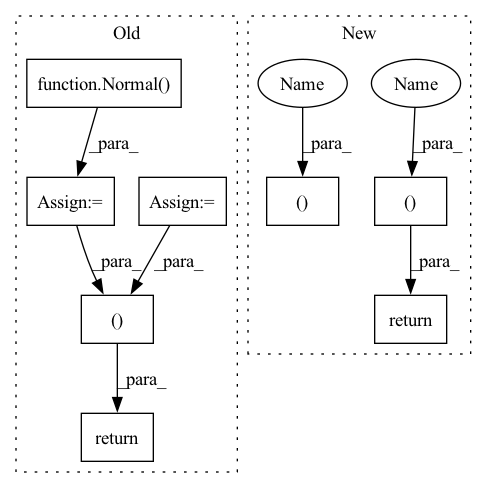

Pattern ID :21791

Before Change
// compute the prob. of normal distribution
d_x_dist = Normal(tar_offset_mean[:, :, 0], torch.tensor([1.0], device=self.device)) // [batch_size, self.N_tar]
d_y_dist = Normal(tar_offset_mean[:, :, 1], torch.tensor([1.0], device=self.device)) // [batch_size, self.N_tar]
d_x = d_x_dist.sample()
d_y = d_y_dist.sample()
// p = tar_candit_pro * d_x_dist.log_prob(d_x) * d_y_dist.log_prob(d_y)
_, indices = tar_candit_prob.topk(self.M, dim=1)
return tar_candit_prob, d_x, d_y, indices
def loss(self,
feat_in: torch.Tensor,
tar_candidate: torch.Tensor,
After Change
// p = tar_candit_pro * d_x_dist.log_prob(d_x) * d_y_dist.log_prob(d_y)
_, indices = tar_candit_prob.topk(self.M, dim=1)
batch_idx = torch.vstack([torch.arange(0, batch_size, device=self.device) for _ in range(self.M)]).T
return tar_candidate[batch_idx, indices], offset[batch_idx, indices]
def loss(self,
feat_in: torch.Tensor,
In pattern: SUPERPATTERN
Frequency: 3
Non-data size: 8
Instances
Fragment ID: 69420080
Project Name: henry1iu/tnt-trajectory-prediction
Commit Name: 5ede0b555e8fa59b52898db84b5e0d7b0758fca0
Time: 2021-04-26
Author: liu.jb.henry@gmail.com
File Name: core/model/layers/target_prediction.py
M Class Name: TargetPred
N Class Name: TargetPred
M Method Name: forward(3)
N Method Name: forward(3)
M Parent Class: nn.Module
N Parent Class: nn.Module
M File Name: core/model/layers/target_prediction.py
N File Name: core/model/layers/target_prediction.py
M Start Line: 57
M End Line: 72
N Start Line: 57
N End Line: 67
'>
Before Change
// compute the prob. of normal distribution
d_x_dist = Normal(tar_offset_mean[:, :, 0], torch.tensor([1.0], device=self.device)) // [batch_size, self.N_tar]
d_y_dist = Normal(tar_offset_mean[:, :, 1], torch.tensor([1.0], device=self.device)) // [batch_size, self.N_tar]
d_x = d_x_dist.sample()
d_y = d_y_dist.sample()
// p = tar_candit_pro * d_x_dist.log_prob(d_x) * d_y_dist.log_prob(d_y)
_, indices = tar_candit_prob.topk(self.M, dim=1)
return tar_candit_prob, d_x, d_y, indices
def loss(self,
feat_in: torch.Tensor,
tar_candidate: torch.Tensor,
After Change
// p = tar_candit_pro * d_x_dist.log_prob(d_x) * d_y_dist.log_prob(d_y)
_, indices = tar_candit_prob.topk(self.M, dim=1)
batch_idx = torch.vstack([torch.arange(0, batch_size, device=self.device) for _ in range(self.M)]).T
return tar_candidate[batch_idx, indices], offset[batch_idx, indices]
def loss(self,
feat_in: torch.Tensor,
'>
Fragment ID: 69420075
Project Name: henry1iu/tnt-trajectory-predition
Commit Name: 5ede0b555e8fa59b52898db84b5e0d7b0758fca0
Time: 2021-04-26
Author: liu.jb.henry@gmail.com
File Name: core/model/layers/target_prediction.py
M Class Name: TargetPred
N Class Name: TargetPred
M Method Name: forward(3)
N Method Name: forward(3)
M Parent Class: nn.Module
N Parent Class: nn.Module
M File Name: core/model/layers/target_prediction.py
N File Name: core/model/layers/target_prediction.py
M Start Line: 57
M End Line: 72
N Start Line: 57
N End Line: 67
'>
Before Change
log_sigma = torch.clip(log_sigma, LOG_STD_MIN, LOG_STD_MAX)
sigma = torch.exp(log_sigma)
a_distribution = Normal(mu, sigma)
action = a_distribution.rsample()
logp_pi = a_distribution.log_prob(action).sum(axis=-1)
logp_pi -= (2 * (np.log(2) - action - F.softplus(-2 * action))).sum(axis=1)
logp_pi = torch.unsqueeze(logp_pi, dim=1)
action = self.max_action * torch.tanh(action)
mu = torch.tanh(mu) * self.max_action
return action, logp_pi, mu
def get_log_density(self, state, action):
a = F.relu(self.fc1(state))
a = F.relu(self.fc2(a))
After Change
return a_distribution, a_tanh_mode
def forward(self, state):
a_dist, a_tanh_mode = self._get_outputs(state)
action = a_dist.rsample()
logp_pi = a_dist.log_prob(action).sum(axis=-1)
return action, logp_pi, a_tanh_mode
def get_log_density(self, state, action):
a_dist, _ = self._get_outputs(state)
action_clip = torch.clip(action, -1. + EPS, 1. - EPS)
'>
Fragment ID: 69420079
Project Name: ryanxhr/dwbc
Commit Name: b3791e408af7125fde12cda1cdeaefbaa400aacc
Time: 2022-06-30
Author: xuhaoran8@jd.com
File Name: algos/DWBC.py
M Class Name: Actor
N Class Name: Actor
M Method Name: forward(2)
N Method Name: forward(2)
M Parent Class: nn.Module
N Parent Class: nn.Module
M File Name: algos/DWBC.py
N File Name: algos/DWBC.py
M Start Line: 35
M End Line: 52
N Start Line: 51
N End Line: 54